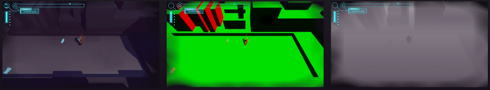

PRAX
This game was for the course Making Games, part of the MSc in Games education. We were a team of 6 people, 3 of us were programmers, my roles were programmer and art lead.
The game is inspired by games like N++ or Super Meat Boy, that offer the player a fun and polished movement system in short challenging levels. The player is expected to try the same level over and over again until they succeed. Making sure the player movement felt good and responsive was foundational to making our game fun.
Player Movement
We wanted to make the player feel as much in control as possible. To achieve this, the movement is directly linked to the input, which can feel and look too rigid, so the rigid movement was balanced out with smooth visuals.
The robot rotates to face the direction it is moving, this helps to make the direction it is going very clear to the player. This is a smooth rotation, which helps to offset the rigidity of the positional movement. So, for example, if the robot is facing to the left and the player moves to the right for just one frame, the robot will move right only in that frame, but the mesh will rotate smoothly over multiple frames until it faces towards the right.

Another way we add smoothness is by making the robot tilt forwards when moving. This also helps to show the player how fast they are going, which is especially important when using a joystick controller.

The robot has a dash ability that quickly moves them forwards with greater speed. For the dash effect I chose to use a trail renderer and a sprite animation for the thrusters. This works really well, since if the trail renderer doesn’t show, like when dashing against a wall, the sprite animation will still show, giving the player feedback that, even without movement, they did indeed dash.


Outline Shader
For our game we use an outline shader to give it a more unique style. The outline also helps us get away with using simple colors and shapes.
We use an edge detection algorithm that tells us where to draw the outlines. For this we used the Robert’s Cross operator, which compares the left and right pixels, and then the above and below pixels. The vertical difference and horizontal difference are summed together and compared to a threshold to see if it is an edge. For example, if we have a gray background and a yellow character, when we get to a pixel on the edge between the character and the background, it will compare the grey and the yellow colors and find that there is an edge.

There is a more accurate operator, called the Sobel operator. It works in a similar fashion, but also includes the diagonal pixels, comparing three pixels on each side, instead of only one, and applies weights based on how close a sample pixel is to the source pixel. Sobel is more accurate than Robert’s Cross, but also more computationally expensive. Therefore, I started with Robert’s Cross for simplicity and performance, and when the result was good enough, I decided that there was no reason to switch to Sobel.

Only using the color of pixels is not enough to detect all edges, we use multiple samples to make sure we don’t miss an edge. Each sample has some strengths and weaknesses, so by combining them, we can more reliably detect edges. Besides color, we use the normals, which tells us what direction a surface is facing, and the depth, which tells us how close a pixel is to the camera. When we use the robert’s cross operator on each of these samples we get a pretty reliable result.
